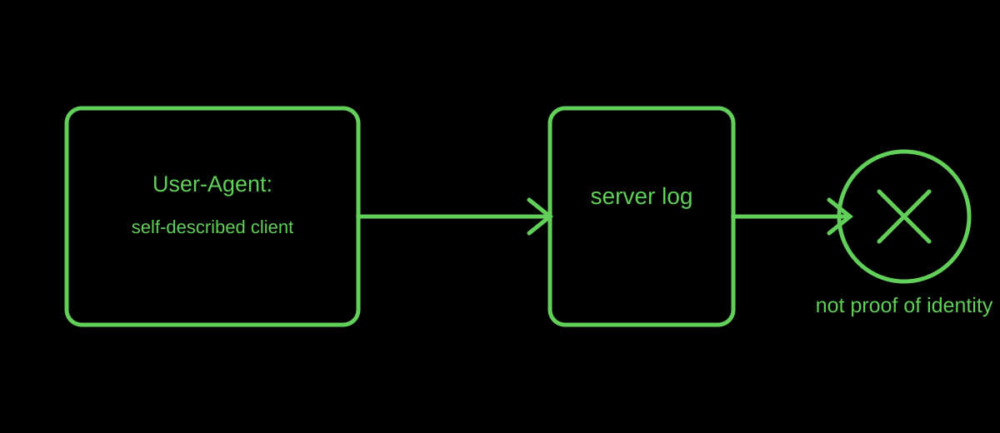

Request metadata
Can You Trust a User-Agent String?
A User-Agent header is useful context about a requesting client, but it is self-described metadata—not a reliable identity document.
Published · By the bug breeder

The short answer
The HTTP User-Agent header is a characteristic string that can describe an application's name, version, vendor, or operating-system context. It can help interpret a request, but a client can send an unexpected or misleading value.
Why parsing it is fragile
Browser strings carry historical compatibility fragments and are being reduced in some contexts for privacy. MDN cautions that browser detection based on User-Agent strings is difficult to do reliably and often creates bugs. Prefer feature detection when deciding how a web page should behave.
For observation, record only the portion of metadata that serves a clear purpose. Insectary treats browser-declared metadata as a trace of contact, not as a claim about a person's identity.
A careful way to use the signal
Use a User-Agent value as one clue alongside request behaviour and verified service documentation. Do not use it alone to grant private access, make a high-confidence attribution, or decide that a visitor is human or automated.
Limits
There are legitimate clients beyond browsers, including bots, download managers, and applications. This article explains the header's limits; it is not a bot-verification system or a security recommendation for a specific deployment.